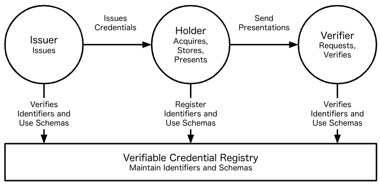
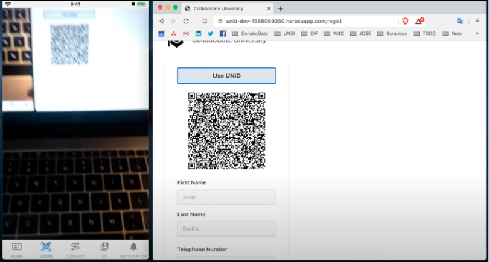
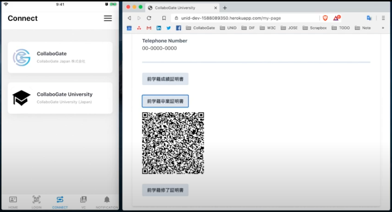

Introduction
Digital Trust
Our society has been established by reducing that complexity through trust. As digital transformation accelerates in all industries, it is necessary to build solutions that enable digital trust on common standards in order to communicate smoothly online.
However, the traditional identity systems today are fragmented, insecure, and do not have sufficient functionality to verify whether the data transferred is reliable in human social activity. For example, when using digital services, we are always required to create accounts and store a small part of our digital identity in the databases of these service providers. Consequently, digital identities become fragmented and locked into numerous different databases controlled by multiple external third parties.
Therefore, the service providers are suffering from high operating costs such as processing, verifying, and sharing data. Additionally, as long as they retain personal identifiable information are incredibly appealing to hackers, they must continue to pay for security and privacy protection, which have become increasingly responsible in recent year.
At UNiD, we are focused on building tools that enable to connect the world with digital trust in a decentralized manner. To achieve this goal, it's important first step to establish a globally unique identity that can be controlled directly by a user without the need for centralized authorities or trusted third parties.
Decentralized Identity
Decentralized identity, also know as self-sovereign identity (SSI), is a digital movement that evolves digital identity on the Internet based on open web standards at organizations such as the W3C, Decentralized Identity Foundation, IETF, and the Hyper ledger Project at the Linux Foundation. A central part of the movement is the emerging standardization around Decentralized Identifiers (DIDs) which is a new type of identifier to allow individuals to create and control their own unique identifiers.
In contrast to typical, federated identifiers, DIDs have been designed so that they may be decoupled from centralized registries, identity providers, and certificate authorities. Any subject (e.g., a person, organization, thing, data model, abstract entity, etc.) can use these identifiers to obtain verifiable credential (VC) from trusted organizations and present these credentials as proof of claims about themselves.
The roles of the core actors and the relationships between them in an ecosystem where DIDs and verifiable credentials are expected to be useful.

UNiD Platform provides tools that enable fundamental capabilities such as DID operations, VC operations, and data exchange in a secure and privacy-preserving manner.
Use Cases
Intro to a digital student wallet
In order to understand the roles in DID ecosystem and how to establish digital trust, we introduce a demonstration of a digital student wallet built on the top of UNiD platform. This demonstration shows password less login and credential issuance when students apply for transcripts to their university.
A student can easily login to the website without any password in a secure manner. A service provider (in this case, it may be a vendor or university) can provide a seamlessly onboarding process to students without retaining personal data in their database.

A student goes to transcript apply page and read a QR code for a request. The web application issues a transcript with the university's signature and send the credential of transcript to a student. Students can bring and present the credential to other parties as proof of his educational history.

This sort of credentials can be presented to enterprises for applying a job. The enterprise as a verifier can cryptographically verify that the credential is correct without contacting the issuer. That begins establishing digital trust around that DIDs by using it in their digital interactions. Through the UNiD SDKs, our platform offers convenient and easy-to-access application logic to build such solutions and integrate with digital services that exist out of our platform.
Wide variety of use cases
Our platform is composed of a collection of micro services, allowing developers to combine pluggable and extensible modular for flexibility and freedom of choice without compromising security for a wide variety of applications for:
- Online Bank
- Insurance
- Human Resource
- Education
- Healthcare
- Gig Economy
- B2B transaction
- SmartCity
- IoT
- Energy
- Travel
- Government
We are currently working on joint projects with leading companies in each industry to connect the world with digital trust. Click here for more info
Contact
- Click here for
bug reportandfeature requestregarding the contents of this document. Thanks for your feedback to help us to improve.